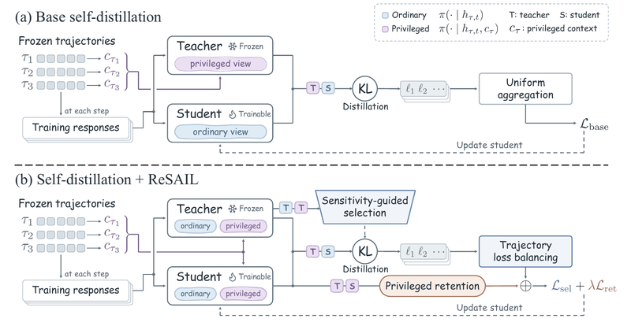

View figureReSAIL: Mitigating Collapse in Iterative Agent Self-Distillation
TL;DR ReSAIL mitigates performance collapse in iterative LLM agent self-distillation by selecting informative interaction steps and preserving behavior conditioned on privileged information as the student becomes the next teacher.